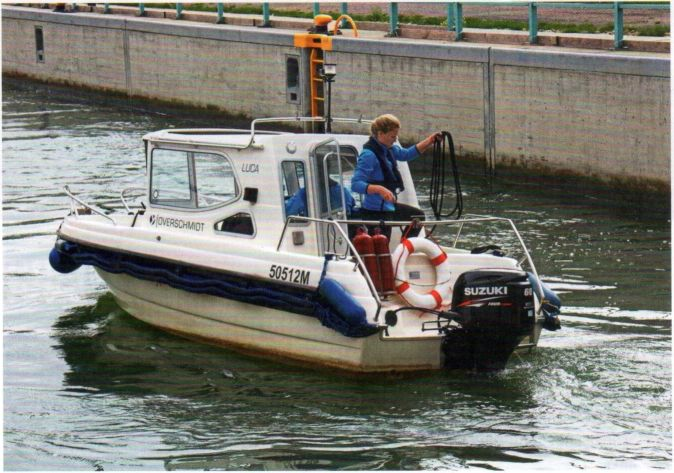

Jeder, der auf Binnenschifffahrtsstraßen ein Motor- oder Segelboot mit einer Nutzleistung von mehr als 11,03 kW (15 PS) fahren will, braucht diesen Sportbootführerschein. Wichtige Ausnahmen bilden der Rhein und einige Landesgewässer, z. B. Abschnitte der Ruhr: Hier gilt eine Fahrerlaubnispflicht für Sportboote bereits mit einer Nutzleistung von mehr als 3,68 kW (5 PS). Das fordert die Sportbootführerscheinverordnung (SpFV) vom 3.5.2017.
Binnenschifffahrtsstraßen im Sinne dieser Führerscheinverordnung sind die Bundeswasserstraßen Rhein, Donau, Mosel, Saar, Main, Main-Donau-Kanal, Neckar, Lahn, Schifffahrtsweg Rhein-Kleve, Ruhr, Rhein-Herne-Kanal, Wesel-Datteln-Kanal, Datteln-Hamm-Kanal, Dortmund-Ems-Kanal, Mittellandkanal mit seinen Zweigkanälen, Ems bis Gleesen, Küstenkanal, Leda, Elisabethfehnkanal, Ems-Seiten-Kanal, Oldersum-Emden, Weser bis Bremen, Werra, Fulda, Aller, Leine, Elbe-Seiten-Kanal, Elbe bis Hamburg, Ilmenau, Elbe-Lübeck-Kanal, Trave bis Lübeck, Saale, Elbe-Havel-Wasserstraße, Untere Havel-Wasserstraße, Teltow-Kanal, Havel-Oder-Wasserstraße, Spree-Oder-Wasserstraße, Oder zwischen Ratzdorf und Widuchowa, Obere Havel-Wasserstraße, Müritz-Elde-Wasserstraße, Peene, Ücker bis Randow.
Anschließende Flussstrecken, die in Nord- oder Ostsee münden, sind Seeschifffahrtsstraßen, auf denen der Sportbootführerschein mit dem Geltungsbereich Seeschifffahrtsstraßen erforderlich ist.
Alle hier nicht genannten Binnengewässer stehen unter der Verwaltung der Bundesländer oder der Kommunen. Wenn auf ihren Gewässern das Motorbootfahren überhaupt erlaubt ist, verlangen sie ebenfalls den Sportbootführerschein mit dem Geltungsbereich Binnenschifffahrtsstraßen.
Außerdem ist auf Gewässern in Berlin und auf verschiedenen angrenzenden Gewässern Brandenburgs der Sportbootführerschein mit dem Geltungsbereich Binnenschifffahrtsstraßen auch für Segelfahrzeuge mit mehr als 6 m2 Segelfläche vorgeschrieben.
Segelsurfbretter sind von der Führerscheinpflicht befreit.
Für Motorboote von 20 bis 25 Meter Länge ist auf den Binnenschifffahrtsstraßen das Sportschifferzeugnis, für Boote von 15 bis 25 Meter auf dem Rhein das Sportpatent vorgeschrieben.
Der Sportbootführerschein gilt ferner nicht auf dem (internationalen) Bodensee. Dort ist das Bodenseeschifferpatent erforderlich, das jedoch umgeschrieben werden kann.